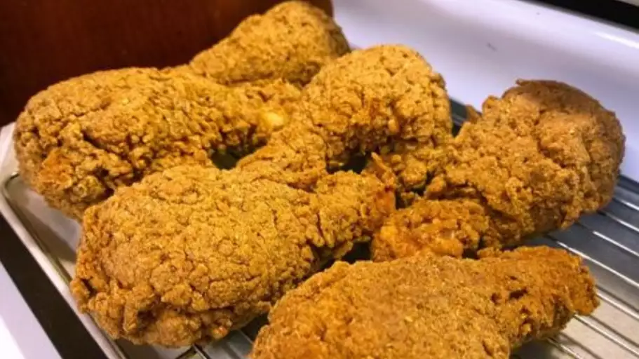
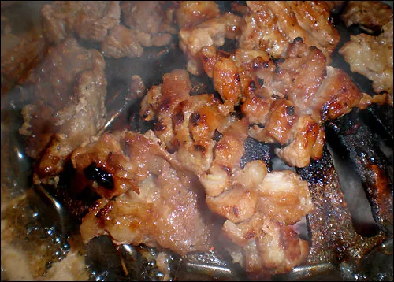
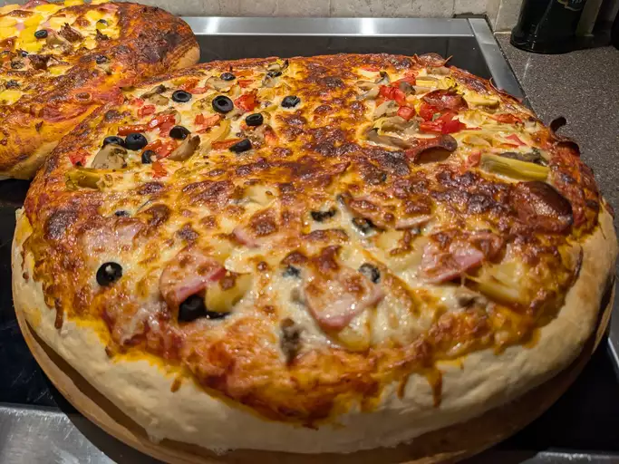

Description
Crispy Fried Chicken is a standard dish in the Cantonese cuisine of southern China and Hong Kong.
The chicken is fried in such a way that the skin is extremely crunchy, but the white meat is relatively soft.
This is done by first poaching the chicken in water with spices (e.g. star anise, cinnamon, nutmeg, Sichuan pepper, ginger, fennel, and scallions),
drying it, coating with a syrup of vinegar and sugar, letting it dry thoroughly (which helps make the skin crispy) and deep-frying.
The dish is often served with two side dishes, a pepper salt (椒鹽) and prawn crackers (蝦片).
The pepper salt, colored dark white to gray, is dry-fried separately in a wok. It is made of salt and Sichuan pepper.
Traditionally this dish is eaten at night. It is also one of the traditional chicken dishes served at Chinese weddings and other Asian weddings.
Ingredients
- Chicken
- Buttermilk
- Flour
- Seasonings
- Oil
Steps
- Take your cut up chicken pieces and skin them if you prefer.
- Put the flour in a large plastic bag (let the amount of chicken you are cooking dictate the amount of flour you use). Season the flour with paprika, salt and pepper to taste (paprika helps to brown the chicken).
- Dip chicken pieces in buttermilk then, a few at a time, put them in the bag with the flour, seal the bag and shake to coat well.
- Place the coated chicken on a cookie sheet or tray, and cover with a clean dish towel or waxed paper. LET SIT UNTIL THE FLOUR IS OF A PASTE-LIKE CONSISTENCY. THIS IS CRUCIAL!
- Fill a large skillet (cast iron is best) about 1/3 to 1/2 full with vegetable oil. Heat until VERY hot.
- Put in as many chicken pieces as the skillet can hold. Brown the chicken in HOT oil on both sides.
- When browned, reduce heat and cover skillet; let cook for 30 minutes (the chicken will be cooked through but not crispy). Remove cover, raise heat again, and continue to fry until crispy.
- Drain the fried chicken on paper towels. Depending on how much chicken you have, you may have to fry in a few shifts. Keep the finished chicken in a slightly warm oven while preparing the rest.

Description
Pork ribs are a cut of pork popular in Western and Asian cuisines. The ribcage of a domestic pig, meat and bones together, is cut into usable pieces, prepared by smoking, grilling, or baking – usually with a sauce, often barbecue – and then served.
Ingredients
- 2 ½ pounds pork spareribs
- (18 ounce) bottles barbeque sauce
- 1 onion, quartered
- 1 teaspoon salt
- ½ teaspoon ground black pepper
Steps
- Place spareribs in a large stockpot; add barbeque sauce, onion, salt, and pepper. Pour in enough water to cover the ribs. Bring to a low boil and simmer for 40 minutes.
- Preheat an outdoor grill for high heat and lightly oil the grate.
- Transfer spareribs onto the preheated grill, reserving the cooking liquid. Cook, basting with reserved cooking liquid often and turning frequently, until nicely browned, about 20 minutes.

Description
Pizza is a traditional Italian dish typically consisting of a flat base of leavened wheat-based dough topped with tomato, cheese, and other ingredients, baked at a high temperature, traditionally in a wood-fired oven.
Pizza and its variants are among the most popular foods in the world. Pizza is sold at a variety of restaurants, including pizzerias (pizza specialty restaurants), Mediterranean restaurants, via delivery, and as street food. In Italy, pizza served in a restaurant is presented unsliced, and is eaten with the use of a knife and fork. In casual settings, however, it is typically cut into slices to be eaten while held in the hand. Pizza is also sold in grocery stores in a variety of forms, including frozen or as kits for self-assembly. They are then cooked using a home oven.
Ingredients
- 1 cup warm water (110 degrees F/45 degrees C)
- 1 (.25 ounce) package active dry yeast
- 1 teaspoon white sugar
- 2 ½ cups bread flour
- 2 tablespoons olive oil
- 1 teaspoon salt
Steps
- Gather all ingredients. Preheat oven to 450 degrees F (230 degrees C), and lightly grease a pizza pan.
- Place warm water in a bowl; add yeast and sugar. Mix and let stand until creamy, about 10 minutes.
- Add flour, oil, and salt to the yeast mixture; beat until smooth. You can do this by hand or use a stand mixer fitted with a dough hook to make it easier.
- Let rest for 5 minutes.
- Turn dough out onto a lightly floured surface and pat or roll into a 12-inch circle.
- Transfer to the prepared pizza pan.
- Spread crust with sauce and toppings of your choice.
- Bake in the preheated oven until golden brown, 15 to 20 minutes. Remove from the oven and let cool for 5 minutes before serving.